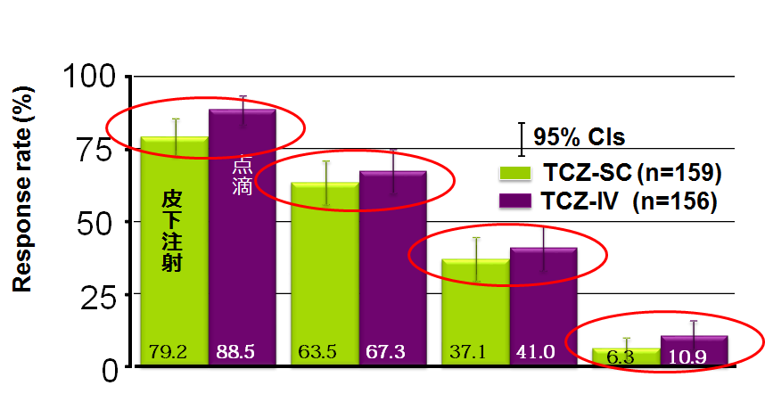

MUSASHI試験では、SCはIVよりやや効果が落ちる？
ACT-SCのPhaseⅢ試験 ACT-IVとACT-SCを24週間投与
【主要評価項目】24週時ACR20（非劣性試験）

有意差はないものの、わずかにIVの方が効果が高い傾向→ACT-SCでコントロールできない患者が存在する
ACT-SCのPhaseⅢ試験 ACT-IVとACT-SCを24週間投与
【主要評価項目】24週時ACR20（非劣性試験）
有意差はないものの、わずかにIVの方が効果が高い傾向→ACT-SCでコントロールできない患者が存在する